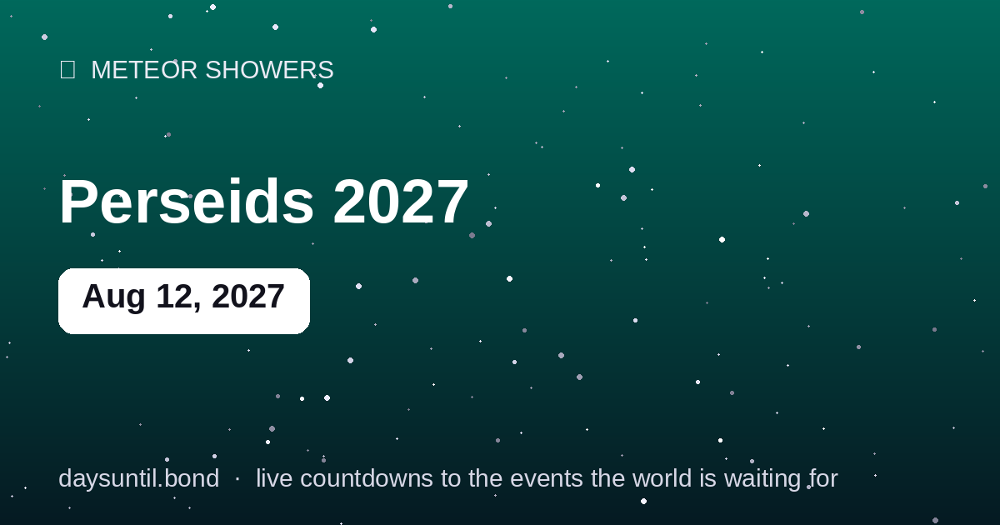

How Many Days Until Perseids 2027?
Perseids 2027 falls on Thursday, August 12, 2027.
The live counter above updates every second in your local time zone. The date and weekday are shown in the event details.

Quick facts
| Peak night | August 12–13, 2027 |
|---|---|
| Best viewing | After midnight to pre-dawn |
| Equipment | None — naked eye only |
About Perseids 2027
The Perseids meteor shower peaks on the night of August 12, 2027 (August 12/13). The people's meteor shower: warm August nights, 50–100 meteors per hour at peak, and more photogenic fireballs than any other annual shower. Halley's comet's bigger, better-known sibling stream.
Best practice for any meteor shower: dark sky, no telescope, eyes adjusted for 30 minutes, look halfway up toward the radiant's constellation. The counter above runs to the peak night; meteors are visible several nights either side.
Perseids 2027: peak night and what to expect
The Perseids are expected to peak around the night of August 12–13, 2027. They are among the most popular annual meteor showers because they combine a strong display with warm Northern Hemisphere summer nights. Activity can be seen on nights around the maximum, although the peak window offers the best chance of higher rates.
Under excellent dark-sky conditions, the Perseids can produce roughly 50–100 meteors per hour at peak. That figure is a standardised ideal rate, not a guarantee for every location. Light pollution, cloud, moonlight and the radiant's height all reduce the number visible to an individual observer.
Why the Perseids are so well known
The shower is associated with Comet 109P/Swift–Tuttle. Each year Earth crosses the comet's debris stream, and dust-sized particles enter the atmosphere at high speed, producing bright streaks. The radiant lies in Perseus, which is how the shower got its name.
Perseids are known for fast meteors and occasional bright fireballs. Their timing in August also makes them accessible to casual observers: a clear, dark location and an hour of patience can be enough to see several, even without specialist equipment.
Best time and direction to watch
The radiant rises higher as the night progresses, so the hours after midnight and before dawn are often the most productive. You do not need to face Perseus continuously. Scan a wide area of sky, preferably with your back to nearby lights, and let your eyes adapt for at least 20 minutes.
Choose a safe site with an unobstructed horizon and check local weather. A reclining chair, sleeping bag and warm layer help you stay comfortable. Avoid bright screens; even a brief glance at a white phone display can reduce dark adaptation.
Moonlight, weather and realistic viewing rates
The Moon is one of the biggest variables in a meteor shower. A bright Moon can make faint Perseids invisible even when the shower is active. The amount of cloud and atmospheric haze matters just as much, and city skyglow can reduce the visible count dramatically.
Do not treat a published ZHR as a promise. It assumes a dark sky, a radiant overhead and ideal observing conditions. For a realistic plan, check the Moon's illumination, the forecast and the latest predicted peak time for your region during the week of the event.
Planning ahead for the 2027 Perseids
Mark the peak night, but keep the adjacent nights available in case weather spoils the maximum. If you are travelling to a dark-sky site, confirm access and safety in advance, and allow enough time for your eyes to adapt after arrival.
The Perseids are part of the annual meteor shower calendar, alongside the Quadrantids, Lyrids, Orionids and Geminids. Comparing their dates helps you plan more than one observing session during the year.
Your Perseids 2027 countdown milestones
It is easier to plan against fixed points than against a number that moves. These are the dates on which the countdown to Perseids 2027 passes each marker between now and the day itself — the last one falls on Wednesday 11 August, when there will be 1 day left.
| Milestone | Day | Date | Remaining |
|---|---|---|---|
| 200 days | Sunday | 24 January 2027 | 200 days to go |
| 100 days | Tuesday | 04 May 2027 | 100 days to go |
| 50 days | Wednesday | 23 June 2027 | 50 days to go |
| 30 days | Tuesday | 13 July 2027 | 30 days to go |
| 14 days | Thursday | 29 July 2027 | 14 days to go |
| 7 days | Thursday | 05 August 2027 | 7 days to go |
| 3 days | Monday | 09 August 2027 | 3 days to go |
| 1 days | Wednesday | 11 August 2027 | 1 day to go |
How the remaining time breaks down
258 days is the headline, but it is rarely the number that helps. 184 of those are weekdays and 74 fall on a weekend, which is the split that matters if you are planning around work. It is 36 weeks and 6 days, or roughly 8.5 months, or about 6,192 hours.
| Unit | Until Perseids 2027 |
|---|---|
| Days | 258 |
| Weeks | 36 weeks and 6 days |
| Months (approx) | 8.5 |
| Weekdays | 184 |
| Weekend days | 74 |
| Hours | 6,192 |
| Sleeps | 258 |
Working days are Monday to Friday and do not subtract public holidays, which vary by country and employer — the full month-by-month split is on our weekday page for Perseids 2027.